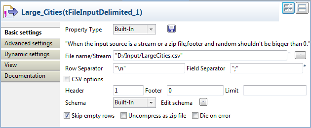
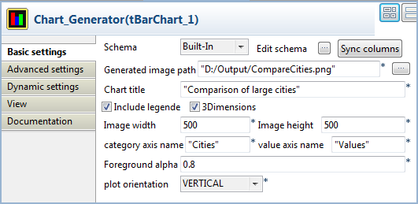
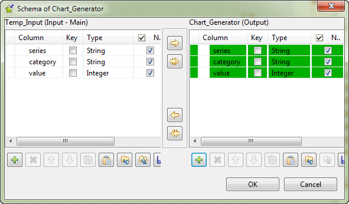

|
Component family |
Business Intelligence/Charts | |
|
Function |
tBarChart reads data from an input flow and transforms the data into a bar chart in a PNG image file. | |
|
Purpose |
tBarChart generates a bar chart from the input data to ease technical analysis. | |
|
Basic settings |
Schema and Edit schema |
A schema is a row description, i.e., it defines the number of fields to be processed and passed on to the next component. The schema is either built-in or remotely stored in the Repository. NoteThe schema of tBarChart contains three read-only columns named series (string), category (string), and value (integer) respectively, in a fixed order. The data in any extra columns will be only passed to the next component, if any, without being presented in the bar chart. |
|
|
|
Built-in: The schema is created and stored locally for this component only. Related topic: see Talend Open Studio User Guide. |
|
|
|
Repository: The schema already exists and is stored in the Repository, hence can be reused. Related topic: see Talend Open Studio User Guide. |
|
|
Sync columns |
Click to synchronize the output file schema with the input file schema. The Sync function only displays once the Row connection is linked with the output component. |
|
|
Generated image path |
Name and path of the output image file. |
|
|
Chart title |
Enter the title of the bar chart to be generated. |
|
|
Include legend |
Select this check box if you want the bar chart to include a legend, indicating all series in different colors. |
|
|
3Dimensions |
Select this check box to create an image with 3D effect. By default, this check box is selected and the bars representing the series of each category will be stacked one over another. If this check box is cleared, a 2D image will be created, with the bars displayed one besides another along the category axis. |
|
|
Image width and Image height |
Enter the width and height of the image file, in pixels. |
|
|
Category axis name and Value axis name |
Enter the category axis name and value axis name. |
|
|
Foreground alpha |
Enter an integer in the range of 0 to 100 to define the transparency of the image. The smaller the number you enter, the more transparent the image will be. |
|
|
Plot orientation |
Select the plot orientation of the bar chart: VERTICAL or HORIZONTAL. |
|
Advanced settings |
tStat Catcher Statistics |
Select this check box to collect log data at the component level. |
|
Usage |
This component is mainly used as Output component. It requires an Input component and Row main link as input. | |
This scenario describes a Job that reads source data from a CSV file and transforms the data into a bar chart showing a comparison of several large cities. The input file is shown below:
City;Population(x1000);LandArea(km2);PopulationDensity(people/km2) Beijing;10233;1418;7620 Moscow;10452;1081;9644 Seoul;10422;605;17215 Tokyo;8731;617;14151 Jakarta;8490;664;12738 New York;8310;789;10452
Because the input file has a different structure than the one required by the tBarChart component, this use case uses the tMap component to adapt the source data to the three-column schema of tBarChart so that a temporary CSV file can be created as the input to the tBarChart component.
Note
You will usually use the tMap component to adjust the input schema in accordance with the schema structure of the tBarChart component. For more information about how to use the tMap component, see Talend Open Studio User Guide and the section called “tMap”.
To ensure correct generation of the temporary input file, a pre-treatment subjob is used to delete the temporary file in case it already exists before the main Job is executed; as this temporary file serves this specific Job only, a post-treatment subjob is used to deleted it after the main Job is executed.
Drop the following components from the Palette to the design workspace: a tPrejob, a tPostjob, two tFileDelete components, two tFileInputDelimited components, a tMap, three tFileOutputDelimited components, and a tBarChart.
Connect the tPrejob component to one tFileDelete component using a Trigger > On Component Ok connection, and connect the tPostjob component to the other tFileDelete component using the same type of connection.
Connect the first tFileInputDelimited to the tMap component using a Row > Main connection.
Connect the tMap component to the first tFileOutputDelimited component using a Row > Main connection, and name the connection Population.
Repeat the step above to connect the tMap component to the other two tFileOutputDelimited components using Row > Main connections, and name the connections Area and Density respectively.
Connect the section tFileInputDelimited to the tBarChart component using a Row > Main connection.
Connect the first tFileInputDelimited component to the second tFileInputDelimited component using a Trigger > On Subjob Ok connection.
Relabel the components to best describe their functionality.

Double-click the first tFileInputDelimited component, which is labelled Large_Cities, to display its Basic settings view.
Fill in the File name field by browsing to the input file.
In the Header field, specify the number of header rows. In this use case, you have only one header row.
Click Edit schema to describe the data structure of the input file. In this use case, the input schema is made of four columns: City, Population, Area, and Density. Upon defining the column names and data types, click OK to close the schema dialog box.

Double-click the tMap to open the Map Editor.
You can see an input table on the input panel, row1 in this example, and three empty output tables, named Population, Area, and Density on the output panel.
Use the Schema editor to add three columns to each output table: series (string), category (string), and value (integer).
In the relevant Expression field of the output tables, enter the text to be presented in the legend area of the bar chart,
"Population (x1000 people)","Land area (km2)", and"Population density (people/km2)"respectively in this example.Drop the City column of the input table onto the category column of each output table.
Drop the Population column of the input table onto the value column of the Population table.
Drop the Area column of the input table onto the value column of the Area table.
Drop the Density column of the input table onto the value column of the Density table.

Click OK to save the mappings and close the Map Editor and propagate the output schemas to the output components.
Double-click the first tFileOutputDelimited component to display its Basic settings view.

In the File Name field, define a temporary CSV file to send the mapped data flows to. In this use case, we name this file Temp.csv. This file will be used as the input to the tBarChart component.
Select the Append check box.
Repeat the steps above to define the properties of the other two tFileOutputDelimited components, using exactly the same settings as in the first tFileOutputDelimited component.
Note
Note that the order of output flows from the tMap component is not necessarily the actual order of writing data to the target file. To ensure the target file is correctly generated, delete the file by the same name if it already exists before Job execution and select the Append check box in all the tFileOutputDelimited components in this step.
Double-click the second tFileInputDelimited component, which is labelled Temp_Input, to display its Basic settings view.

Fill in the File name field with the path to the temporary input file generated by the tFileOutputDelimited components. In this use case, the temporary input file to the tBarChart is Temp.csv.
Double-click the tBarChart component to display its Basic settings view.
In the Generated image path field, define the file path of the image file to be generated.
In the Chart title field, define a title for the bar chart.
Define the category and series axis names.
Define the size and transparency degree of the image if needed. In this use case, we simply use the default settings.
Click Edit schema to open the schema dialog box.
Copy all the columns from the output schema to the input schema by clicking the left-pointing double arrow button. Then, click OK to close the schema dialog box.
As the tPrejob and tPostjob components simply trigger the connected subjobs and do not have any settings to define, all you need to do is to define the properties of the two tFileDelete components.
Double-click the first tFileDelete component to display its Basic settings view.

Fill in the File name field with the path to the temporary input file.
Note
If the Fail on error check box is selected while the pre-treatment subjob fails because of errors such as the file to delete does not exist, this failure will prevent the main subjob from being launched. In this situation, you can clear the Fail on error check box to avoid this interruption.
Specify the same file path in the other tFileDelete component.